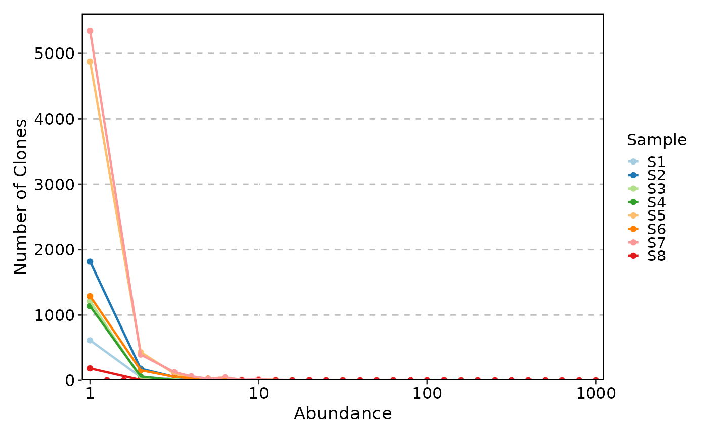
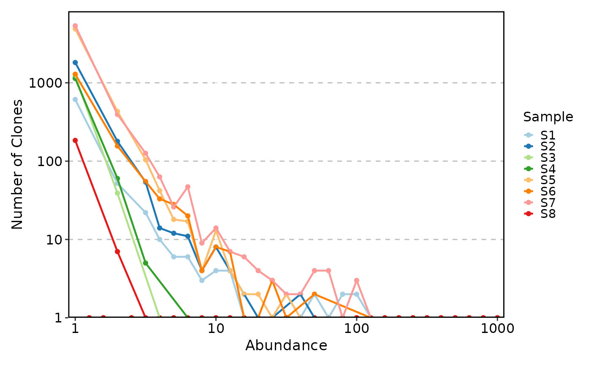
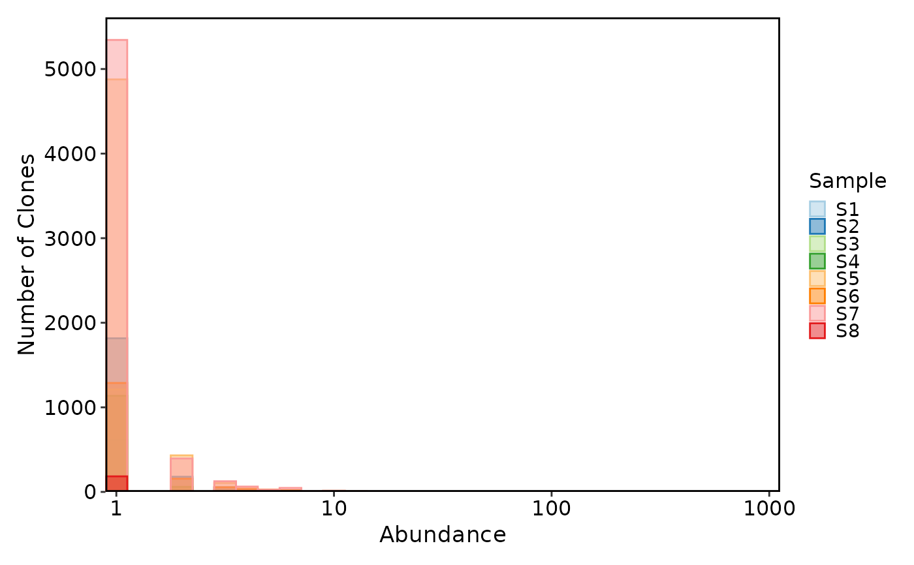
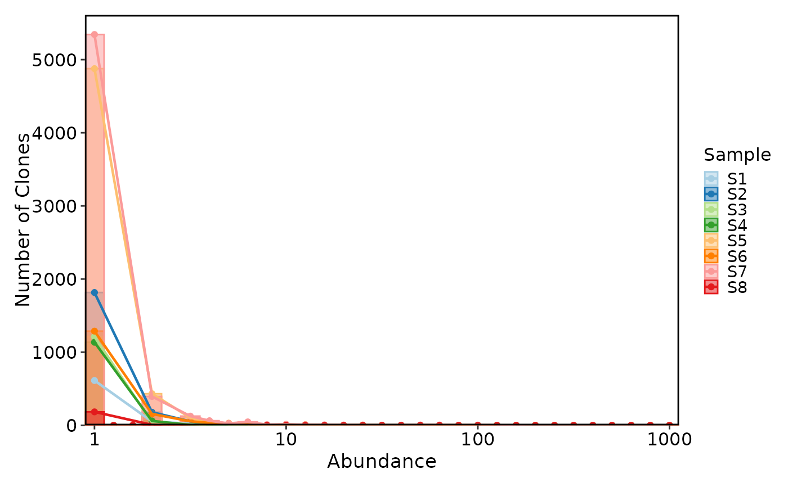
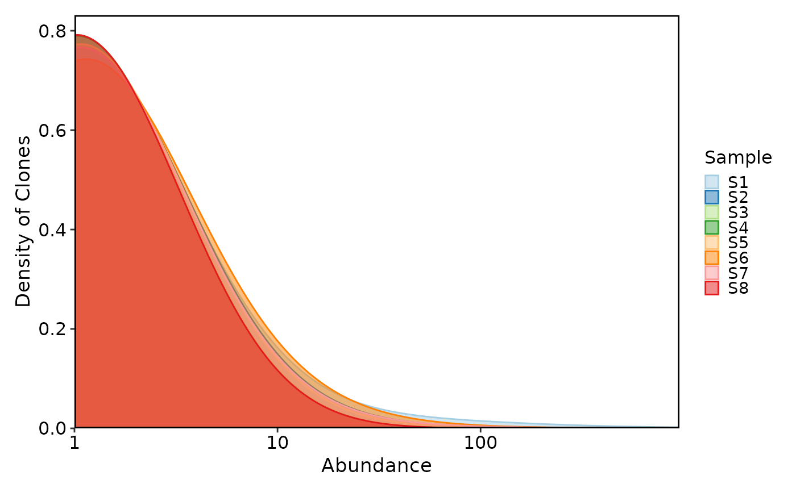
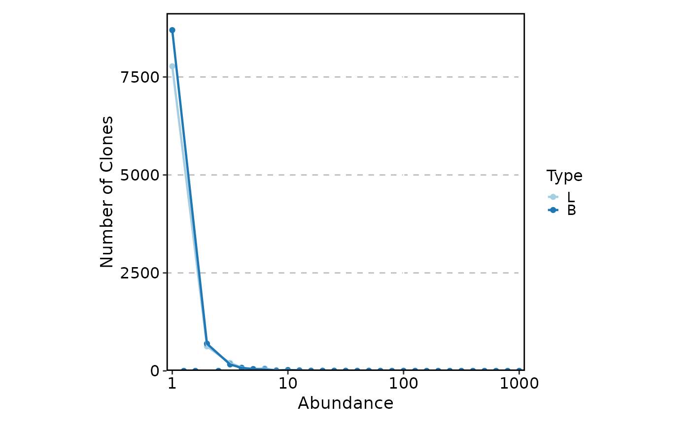

Visualizes the distribution of clonal abundances — how many clones are present at each abundance level (frequency) in the repertoire. Clonal abundance distributions typically follow a power-law pattern: a small number of highly expanded clones and a large number of rare clones. This function helps characterize repertoire structure by showing whether the immune response is dominated by a few large clones (clonal expansion) or evenly distributed across many clones (high diversity).
ClonalAbundancePlot computes clonal abundance data via
scRepertoire::clonalAbundance()
and visualizes it as trend lines, histograms, or density curves.
Usage
ClonalAbundancePlot(
data,
clone_call = "aa",
chain = "both",
xtrans = "log10",
ytrans = "identity",
plot_type = c("trend", "histogram", "density"),
binwidth = 0.1,
trend_skip_zero = TRUE,
bw = 0.5,
group_by = "Sample",
group_by_sep = "_",
facet_by = NULL,
split_by = NULL,
order = NULL,
xlab = "Abundance",
ylab = NULL,
theme_args = list(),
...
)Arguments
- data
The product of
scRepertoire::combineTCR(),scRepertoire::combineBCR(), orscRepertoire::combineExpression().- clone_call
How to define a clone. One of
"gene","nt","aa"(default),"strict", or a custom variable name in the data.- chain
Which chain(s) to use:
"both"(default),"TRA","TRB","TRD","TRG","IGH", or"IGL".- xtrans
Transformation applied to the x-axis. Default is
"log10", which spreads low-abundance clones for better visibility. Use"identity"for linear scale.- ytrans
Transformation applied to the y-axis. Default is
"identity". Use"log10"to better visualize distributions spanning multiple orders of magnitude.- plot_type
The visualization type. One of:
"trend"(default) — Smoothed trend line showing the number of clones at each abundance level. The x-axis is transformed byxtrans(default log10), and a LOESS trend is fitted."histogram"— Binned histogram of clonal abundances. Optionally overlay a trend line withadd_trend = TRUE."density"— Kernel density estimate of the abundance distribution.
- binwidth
The histogram bin width (in log10-transformed abundance units). Default is
0.1. Only used for"trend"and"histogram"plot types.- trend_skip_zero
Logical; if
TRUE(default), zero-abundance bins are excluded from the trend line fit. Improves fit quality when many abundance bins have zero clones.- bw
Smoothing bandwidth for density plots. Higher values produce smoother curves. Default is
0.5.- group_by
Metadata column used to group (color) the data. Default is
"Sample".- group_by_sep
Separator used when concatenating multiple
group_bycolumns. Default is"_".- facet_by
Metadata column used to facet the plot into separate panels. Default is
NULL.- split_by
Metadata column used to split the data into separate plots. Default is
NULL.- order
A named list controlling the order of factor levels. List names are column names; list values are the desired order. Default is
NULL.- xlab
X-axis label. Default is
"Abundance".- ylab
Y-axis label. Default is
NULL, which auto-generates"Number of Clones"(trend/histogram) or"Density of Clones"(density).- theme_args
A list of theme elements passed to the underlying plotthis function. Default is an empty list.
- ...
Additional arguments passed to the underlying plotthis function:
"trend"—plotthis::Histogram()(withuse_trend = TRUE;palette,alpha, ...)"histogram"—plotthis::Histogram()(add_trend,palette,alpha, ...)"density"—plotthis::DensityPlot()(palette,alpha, ...)
Examples
# \donttest{
set.seed(8525)
data(contig_list, package = "scRepertoire")
data <- scRepertoire::combineTCR(contig_list)
data <- scRepertoire::addVariable(data,
variable.name = "Type",
variables = factor(sample(c("B", "L"), 8, replace = TRUE), levels = c("L", "B"))
)
data <- scRepertoire::addVariable(data,
variable.name = "Sex",
variables = factor(sample(c("M", "F"), 8, replace = TRUE), levels = c("M", "F"))
)
ClonalAbundancePlot(data)
#> Warning: Removed 104 rows containing missing values or values outside the scale range
#> (`geom_line()`).

ClonalAbundancePlot(data, ytrans = "log10")
#> Warning: log-10 transformation introduced infinite values.
#> Warning: Removed 104 rows containing missing values or values outside the scale range
#> (`geom_line()`).

ClonalAbundancePlot(data, plot_type = "histogram")

ClonalAbundancePlot(data, plot_type = "histogram", add_trend = TRUE, trend_skip_zero = TRUE)
#> Warning: Removed 104 rows containing missing values or values outside the scale range
#> (`geom_line()`).

ClonalAbundancePlot(data, plot_type = "density")

ClonalAbundancePlot(data, group_by = "Type")
#> Warning: Removed 9 rows containing missing values or values outside the scale range
#> (`geom_line()`).

# }